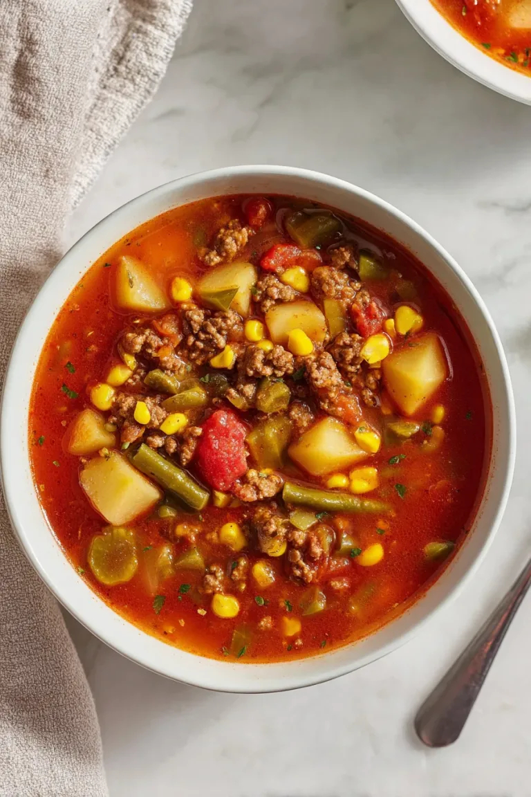

Cowboy Soup
Home

This cowboy soup with beef, lots of vegetables, and a tomato base, is a hearty stick-to-your-ribs kind of meal. Leftovers are even better the next day and it freezes well, too.
Ingredients
- 1 pound ground beef
- 1 onion, chopped
- 1 large green bell pepper, chopped
- 4 cups beef broth
- 1 (14.5 ounce) can Mexican-flavored diced tomatoes, undrained
- 1 (15.5 ounce) can pinto beans, undrained
- 1 (15.25 ounce) can corn, drained
- 1 large baking potato, peeled and cubed
- 1 tablespoon chili powder
- 1 tablespoon Worcestershire sauce
- 1 teaspoon paprika
- 1/2 teaspoon ground cumin
- salt and freshly ground black pepper to taste
Steps
- Heat a large stock pot over medium-high heat. Add ground beef and onions. Cook, breaking up beef with a spatula, until onions have softened and beef is no longer pink, about 5 minutes. Drain excess grease.
- Add green pepper, beef broth, tomatoes, beans, corn, potato, chili powder, Worcestershire sauce, paprika, and cumin. Bring to a boil; reduce heat and simmer for 40 minutes. Season with salt and pepper. Ladle into bowls and serve.